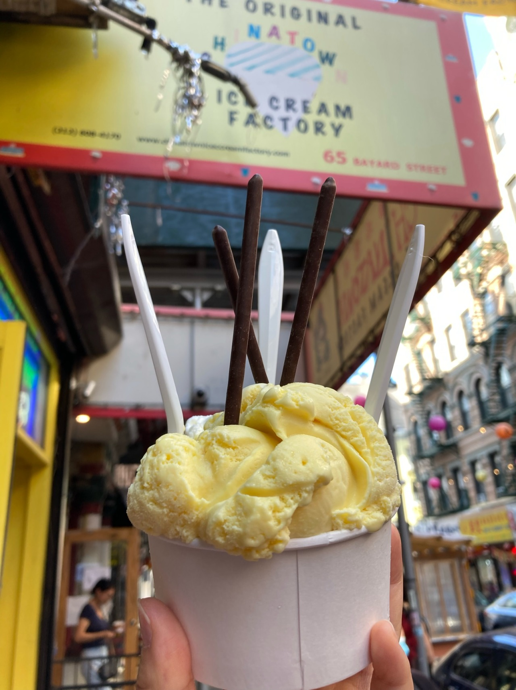
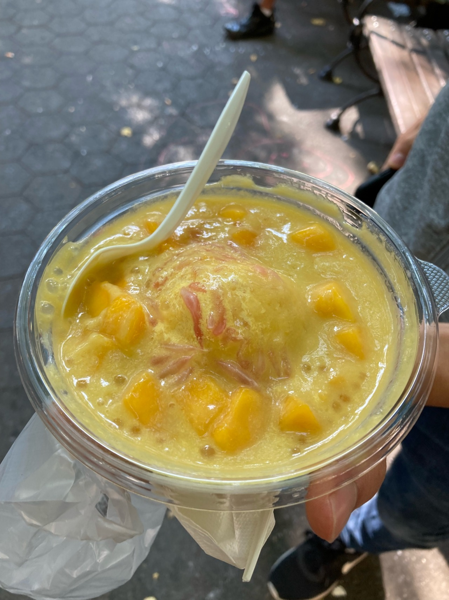
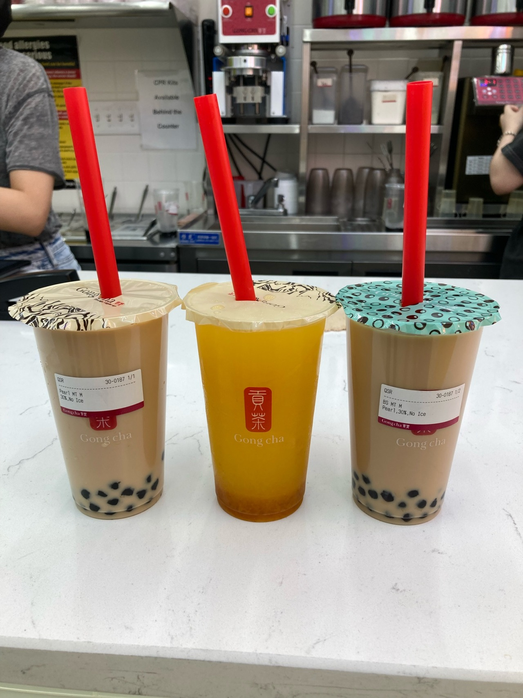
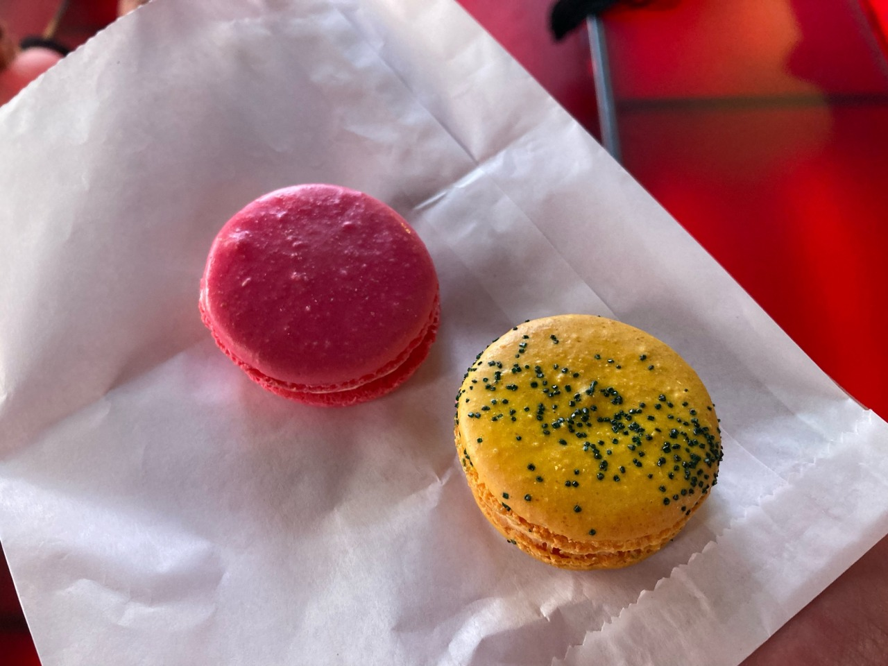
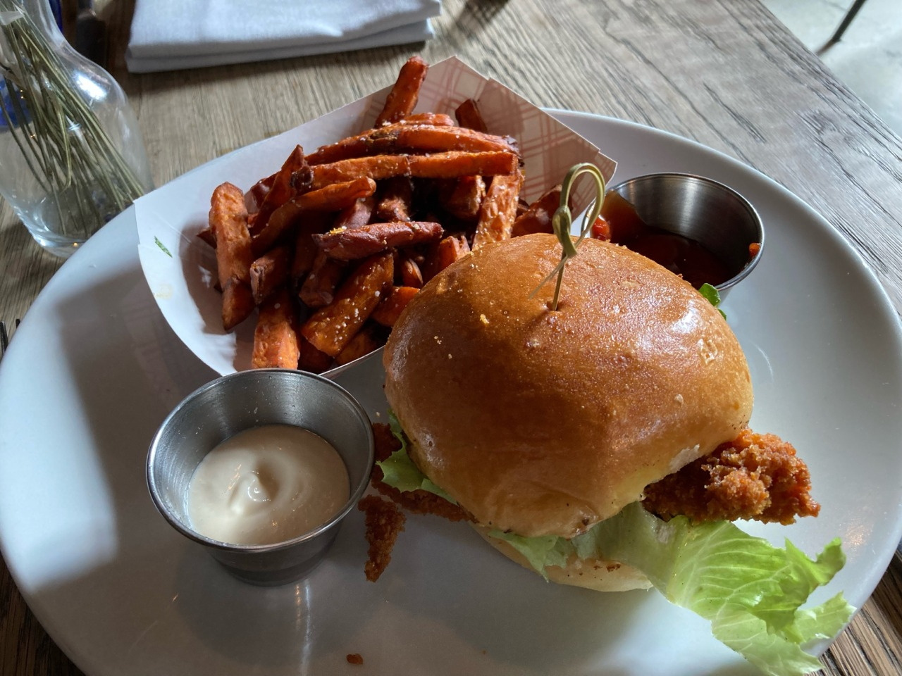
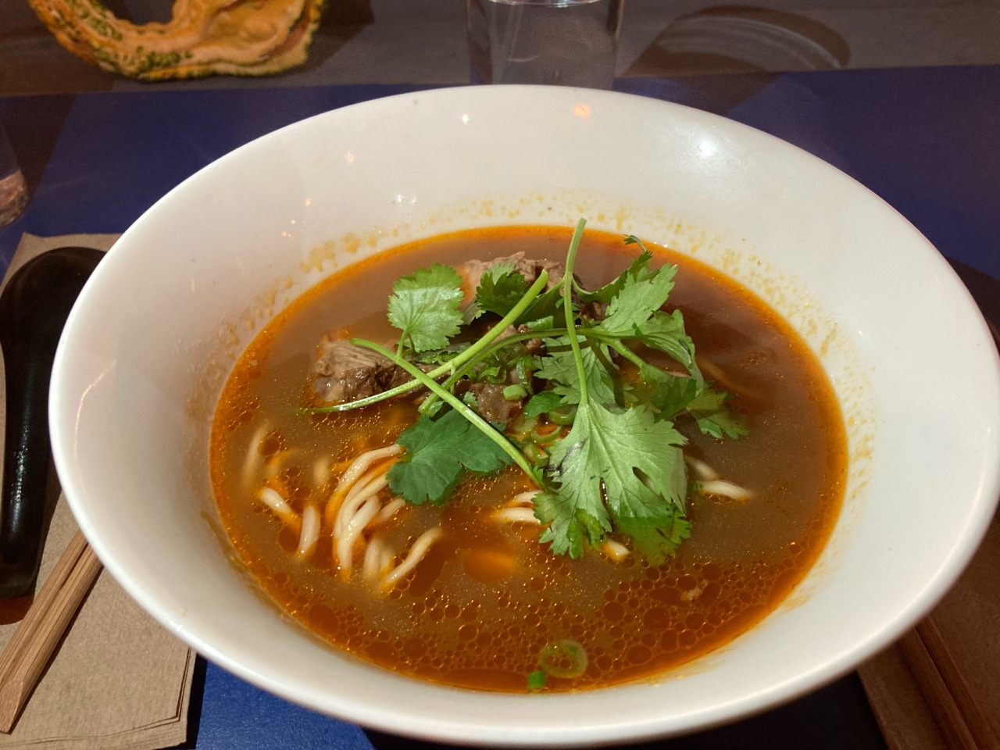
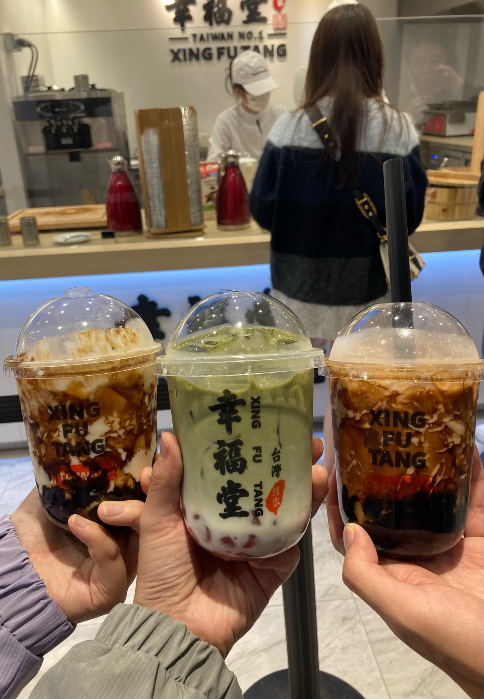
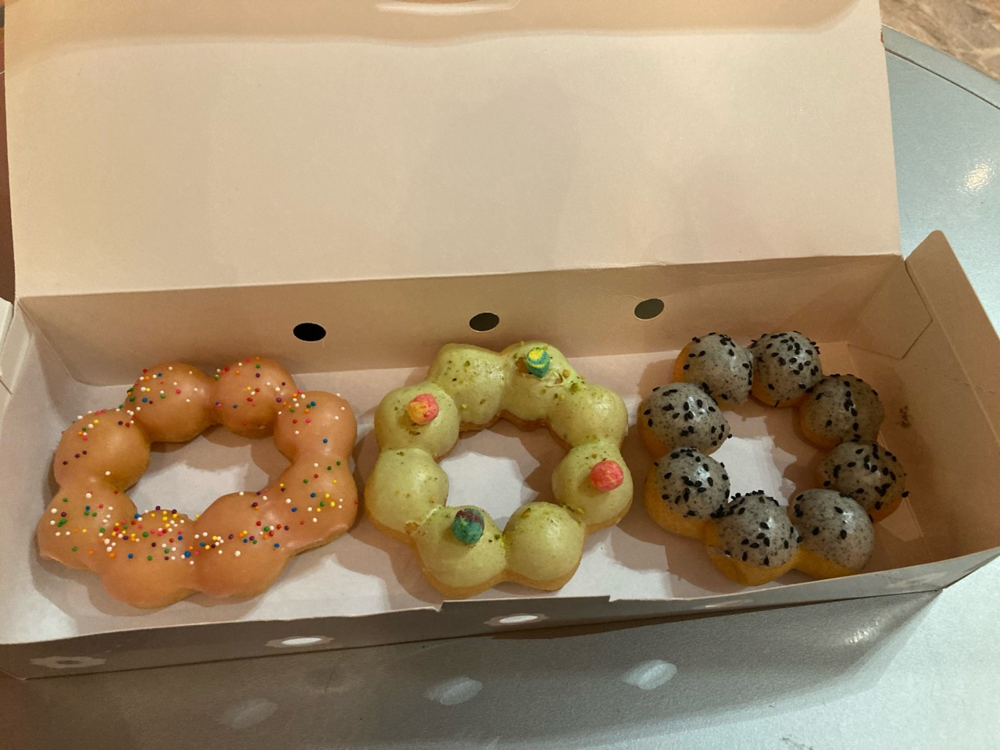

day 1 of nyc adventures!!
got into nyc last night at like 1 am and went straight to bed because micah insisted that we get up at 9 am which is E A R L Y, especially if you’ve been cramming at 4 am lately.
the next morning, he trained down and we saw the statue of liberty… from a distance. it looks teeny tiny from here lol, but that’s okay. after that, we went to the 9/11 memorial, which is pretty cool, and then to our first food stop: chinatown!!
we went to this restaurant called shanghai 21 because it had good reviews on yelp. we ordered shanghai lo mein with beef, xiaolongbao (pork and pork with crab), and black mushrooms with “bai choy,” which was just bok choy spelled weirdly. it was pretty good overall.
noodles were cooked really well, like they were just a little chewy still (8/10). micah said the crab xiaolongbao was better than the pork one, but they were just alright. i thought they were good, but xiaolongbao is always good (7/10). micah and i thought the mushrooms were good, but he also said the sauce was too sweet for him and he would’ve wanted rice with it (5/10).
afterwards, i was SO full, but they still went looking for snacks. we stopped at the original chinatown ice cream factory because they had some cool flavors, like matcha cookie, dontot, rose lychee, etc. we ended up getting 2 scoops of lychee and dontot.
lychee ice cream was SO good, like creamy and refreshing all at the same time. but it did melt really fast and spilled on micah’s shoe (9.5/10). the dontot ice cream was v good also. the egg flavor was really strong and you could even taste a little bit of the butteryness from the crust. reminded me of my childhood. also, spilled less than the lychee one (8/10). and it all came with pocky!!
micah also bought us mango ice cream with sago and mango chunks at mango mango. it got kind of melty though while we were eating the ice cream, and the 2 losers i was traveling with took bad pics of the food. still like a 7/10.


okok, honestly, i was super super excited for boba in nyc because everyone said it’s way better than what we have in AA, but gong cha was not it. or maybe i got the wrong thing. but it was bad. i ordered a brown sugar milk tea with pearls, 30% sugar because usually brown sugar is pretty sweet. BUT it tasted like ZERO sugar. actually had NO brown sugar taste and basically just tasted like tea with some milk in it. 1/10, i can make that at home. micah got pearl milk tea and my sister got mango yogurt drink, which was the best one. micah switched drinks with me. :)

finished the night off with some macarons in time square from mia’s bakery. i got rose lychee and micah got passionfruit. rose lychee one has better texture, but the passionfruit one had better flavor (obv because best fruit).

day 2 of nyc adventures!!
spent most of the day with my sister since micah was busy with his parents, but she planned a super fun day! she went out in the morning to meet a friend, so i had to train to the whitney art museum by myself and i uhhhh *intentionally* took the scenic route. definitely did not go the wrong way or miss a turn or anything like that. and definitely didn’t miss lunchtime because of that detour, cutting into our museum time. it’s okay tho because we walked to a nice sandwich shop called high street on hudson, which could probably use more organization because like 3 or 4 different people tried to take our order even after we had already ordered. i ordered a spicy chicken sandwich, she ate some of my sweet potato fries. the sandwich was just okay, like a 6/10. fries were pretty good because they were fresh, but like 7/10.

then we met up with micah at a restaurant in east village called ho foods. there was literally no chance we weren’t gonna eat there bc not only was it called ho foods, it was also a taiwanese restaurant that had beef noodle soup, which btw was SO good. the soup was a little too fatty, but the noodles were cooked well and the beef was really really really good. their mustard greens were p sour though because they pickled them in house. 9/10

then we walked around east village looking for some dessert. we walked past this place that said “taiwan no. 1” and joked about going inside, but passed it for a different dessert place. unfortunately (or fortunately), the dessert place we wanted to go to had like an hour long wait so we circled back and ended up going back to xing fu tang because taiwan truly is no. 1. i ordered the matcha milk (lactaid :)) with strawberry boba, micah got the pearl milk tea (this guy so boring), and my sister got the brown sugar boba. also also, we could see them making the strawberry boba from fresh right in front of us!!
the matcha milk was SO SO good, like 9.5/10. also the boba was v soft and v fresh. the strawberry flavor really came through. the brown sugar one was really good too, and then the pearl milk tea. basically, micah is bad at ordering.


finished dessert with some mochi donuts from mochinuts. we each ordered one to share, so i got guava, micah got pistachio, and my sister got black sesame. the black sesame one was good— it had a really strong flavor that wasn’t too overpowering. i also like the guava one a lot because it was a more subtle, refreshing flavor. the pistachio one was pretty good, it was nice and nutty, but it came with this weird slightly stale cereal on top that i didn’t think worked with the rest of the donut. these were all rly good tho, so like 9/10 all. also, the 2 losers i was with def didn’t get us kind of lost by going to the wrong platform.